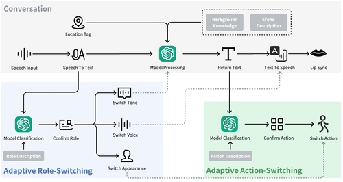
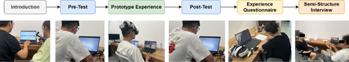
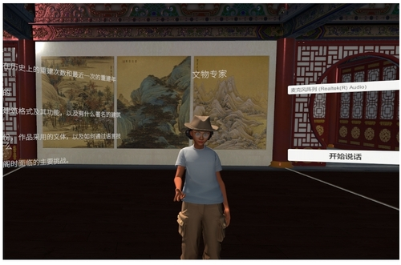
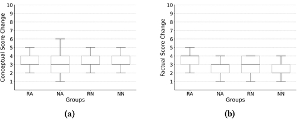
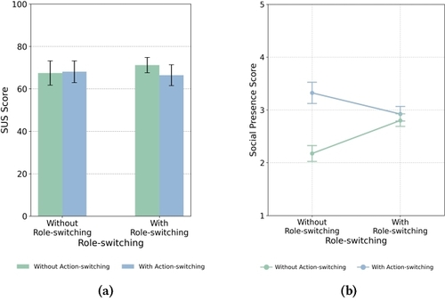
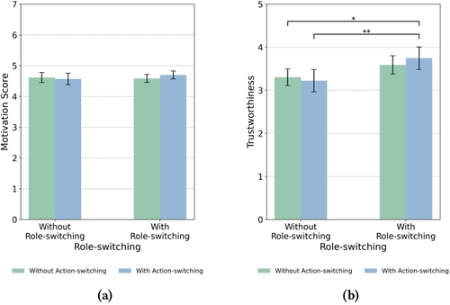
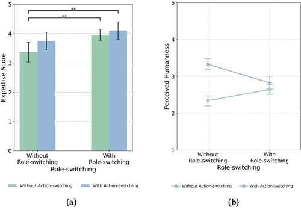

VR technology enables immersive, time-travel-like experiences that reconstruct historical scenes and make abstract knowledge tangible. Pedagogical agents (PAs) are central to this transformation, guiding learners through narratives, spatial exploration, and contextual storytelling. However, existing multi-role PAs often remain cumbersome to control, offer rigid feedback, and fail to adapt to individual learner needs. The rapid evolution of large language models (LLMs) opens new opportunities for designing PAs that can personalize instruction and respond dynamically to learner inputs.

We created a VR learning experience centered on the history of the Pavilion of Prince Teng. The prototype integrates LLM-driven reasoning with immersive storytelling so that learners receive personalized responses and contextual demonstrations. Two adaptive modules form the core of the system, enabling the PA to select the most appropriate role and action sequence based on each learner’s questions.

Triggered by learner prompts, the PA can automatically adopt the most suitable persona. Each role comes with distinct attire, vocal characteristics, and narrative tone to reinforce authenticity and credibility.
Role transitions happen seamlessly, maintaining learner immersion while tailoring explanations to question intent.
Beyond dialogue, the PA selects from 18 animated actions grouped into four categories. The LLM determines which gestures best complement the spoken response, making explanations more expressive and spatially grounded.
| Action Category | Purpose | Representative Gestures |
|---|---|---|
| Pointing | Guide attention to architectural details or spatial references. | Highlight inscriptions, trace roof curves, indicate river orientation. |
| Natural Expressive | Convey enthusiasm and empathy to sustain engagement. | Open-arm welcome, thoughtful nods, inviting hand waves. |
| Descriptive | Visualize processes or imagery embedded in narratives. | Mimic writing poetry, demonstrate calligraphy strokes, outline skyline silhouettes. |
| Character-Specific | Reinforce persona identity and historical authenticity. | Formal bow of a court official, scholarly contemplation, modern analytical gestures. |
By aligning verbal explanations with context-aware gestures (see Figure 2(b) and Table 1), the PA deepens learner comprehension and social presence.
We employed a 2 × 2 between-subjects design that assigned 84 participants to four conditions: role-switching (R) versus no role-switching (N), and action-switching (A) versus no action-switching (N). This resulted in four groups:
Participants experienced the VR prototype (see Figure 4) and completed pre- and post-tests covering conceptual and factual knowledge, alongside questionnaires on social presence, trustworthiness, expertise, and humanness.


Participants described adaptive role-switching as “novel” and “fun,” which reinforced their trust in the PA. As one learner noted, “It’s more believable to hear Poet Wang Bo himself describe the background of his preface.”
However, frequent and abrupt role transitions could occasionally feel incoherent, highlighting the importance of pacing controls.
Across action types, pointing gestures were considered the most helpful for navigation, whereas descriptive actions (e.g., mimicking writing) were viewed as supplementary rather than essential.


